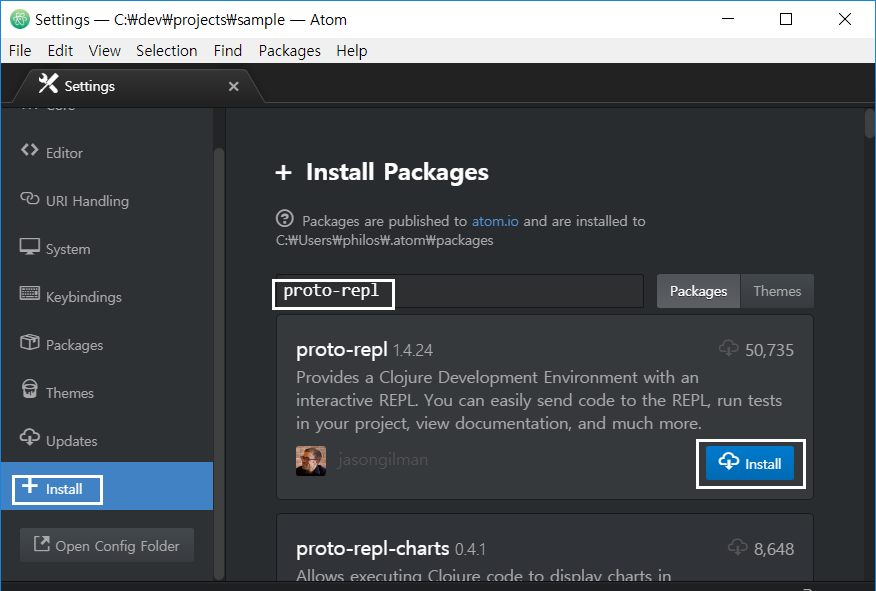

1. Atom editor 설치
-
https://atom.io/를 방문해 아톰 윈도우즈 최신 버전(여기서는
AtomSetup-x64.exe파일)을 다운로드 받는다. -
다운받은
AtomSetup-x64.exe파일을 실행해. 아톰 편집기 설치를 마친다.
2. ink 플러그인 설치
먼저 ink 플러그인을 설치한다. 이 플러그인에 대한 자세한 설명은 https://github.com/JunoLab/atom-ink를 참조한다.
-
[Files — Settings — Install] 버튼을 클릭한 후, 텍스트 입력 상자에
ink라고 입력한 후install버튼을 클릭한다.
3. proto-repl 플러그인 설치
-
위와 같은 요령으로 [Files — Settings — Install] 버튼을 클릭한 후, 텍스트 입력 상자에
proto-repl이라고 입력한 후install버튼을 클릭한다.